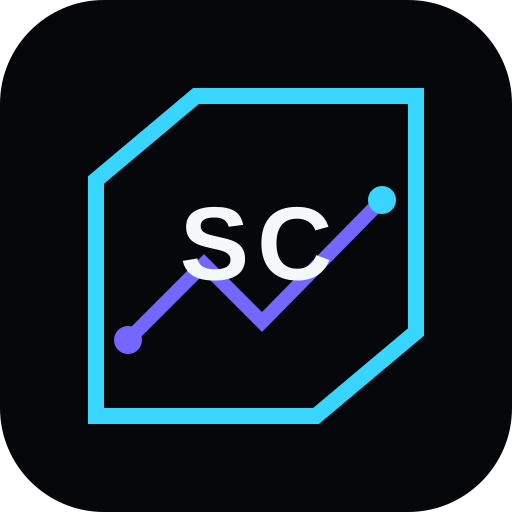
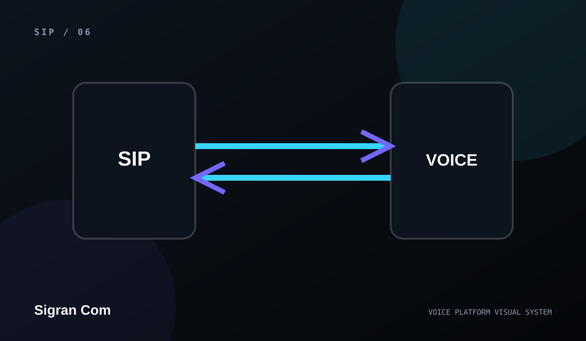

Architecture
Define the operating model clearly

Sigran ComVoice & CommunicationsVOICE PLATFORM
A practical reference for SIP, PSTN, DID, IVR, call control, webhooks, codecs, routing, provisioning, and other communications concepts.

COMMUNICATIONS ARCHITECTURE
A practical reference for SIP, PSTN, DID, IVR, call control, webhooks, codecs, routing, provisioning, and other communications concepts.
This page is intentionally specific about architecture and user experience while avoiding unverified provider coverage, rates, certifications, uptime guarantees, customer counts, or call-volume claims.
Define the operating model clearly
Keep configuration separate from public marketing content
Connect support and observability to the product experience
Replace conceptual content with verified production details as they become available
Credentials and provider configuration stay on the server side. Public website code should never contain API keys, private tokens, or account passwords.